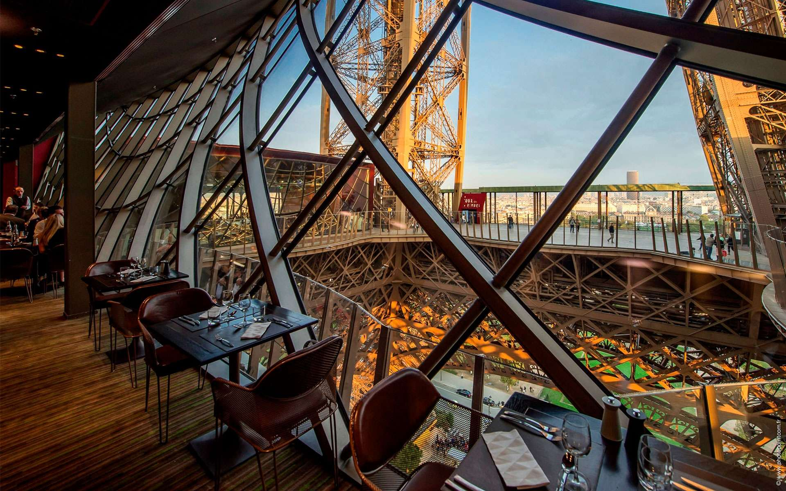
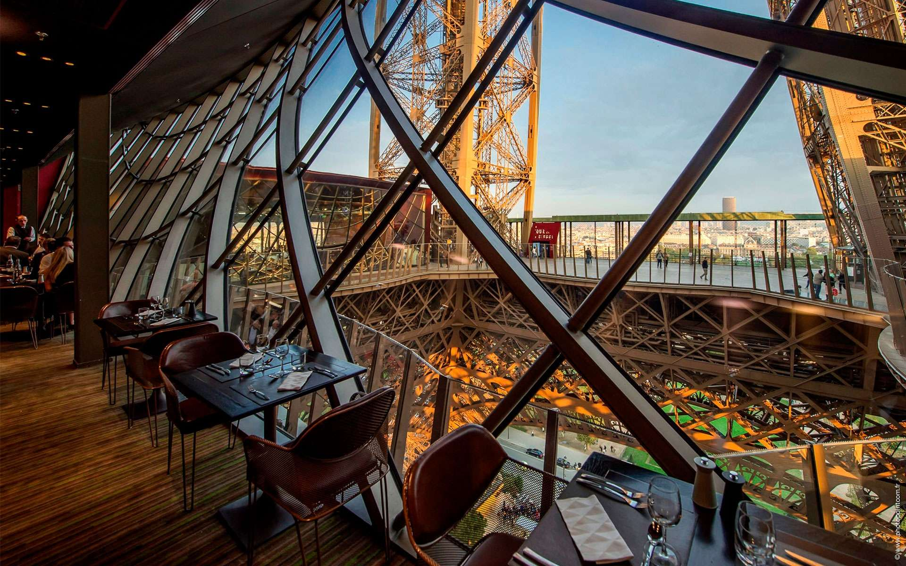

Climb the stairs and reach the second floor! Wander around the center of the tower’s metallic structure at your own pace and contemplate the fantastic iron piece of art and its historyAnother thing to do in the Eiffel Tower would be of course a guided tour to learn everything about the most famous monument of ParisYou don’t want to miss the panoramic view from the second floor, with Paris at your feet. From the right bank to the left bank (Learn more about right bank vs left bank),
the Eiffel Tower offers you the most unique view over the major landmarks of the city of lightsHowever, be prepared to queue (read tips for your visit here) : it can take up to 4 hours to access to the Eiffel Tower. Even if you arrive early in the morning or at the end of the day, you won’t be alone ! Our advice would be to visit the Eiffel Tower with a local guide (more informaton and tickets here). These tickets are more expensive than normal tickets, but the Eiffel Tower is a must-see in
Paris and you don’t want to spend the whole day waiting in a line.
 
